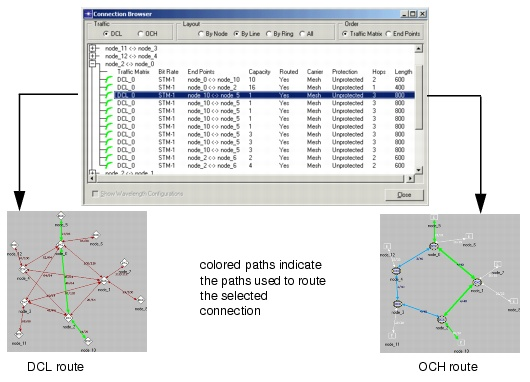

Viewing and Configuring Objects > Connection Browser > Viewing Paths Using the Connection Browser
Viewing Paths Using the Connection Browser
You can use the Connection Browser to view the working and protection paths of a connection. When you click on a routed connection, SP Guru Transport Planner highlights the working and protection paths of that connection in the network topology.
Both windows have controls to set the network-layer view: LOP, DCL, and OCH in the Connection Browser; and all four layers in the Project Editor. To view the OCH paths used to route a DCL (or, by extension, an LOP) connection, set the Connection Browser to the DCL or LOP view and the Project Editor to the OCH view.
Figure 4-17 Viewing Routes Using the Connection Browser

| Home © 1987-2007 OPNET Technologies, Inc. All Rights Reserved. This software may be covered by one or more U.S. Patents. See complete patent notice in the Legal Notices section. OPNET Support Center |